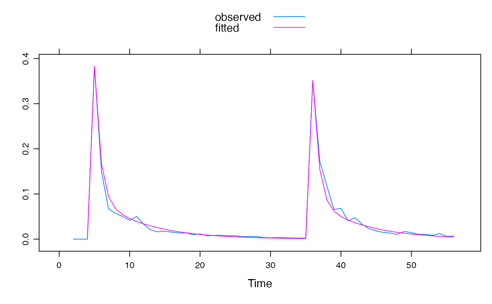

R/armax.inverse.fit.R
armax.inverse.fit.Rdarmax.inverse.fit( DATA, order = hydromad.getOption("order"), delay = hydromad.getOption("delay"), fit.method = hydromad.getOption("inverse.fit.method"), normalise = TRUE, init.U = TRUE, pars = NULL, use.Qm = TRUE, fft.inverse.sim = FALSE, rises.only = FALSE, ..., max.iterations = hydromad.getOption("inverse.iterations"), rel.tolerance = hydromad.getOption("inverse.rel.tolerance"), par.epsilon = hydromad.getOption("inverse.par.epsilon"), init.attempt = 0, trace = hydromad.getOption("trace") )
| DATA | a
|
|---|---|
| order | the transfer function order. See |
| delay | delay (lag time / dead time) in number of time steps. If missing, this will be estimated from the cross correlation function. |
| fit.method | Placeholder |
| normalise | Placeholder |
| init.U | Placeholder |
| pars | Placeholder |
| use.Qm | Placeholder |
| fft.inverse.sim | Placeholder |
| rises.only | Placeholder |
| ... | Placeholder |
| max.iterations | Placeholder |
| rel.tolerance | Placeholder |
| par.epsilon | Placeholder |
| init.attempt | Placeholder |
| trace | Placeholder |
a tf object, which is a list with components
the fitted parameter values.
the fitted values.
the residuals.
the (possibly fitted) delay time.
In normal usage, one would not call these functions directly, but rather
specify the routing fitting method for a hydromad model using
that function's rfit argument. E.g. to specify fitting an
expuh routing model by inverse filtering one could write
hydromad(..., routing = "expuh", rfit = "inverse")
or
hydromad(..., routing = "expuh", rfit = list("inverse", order =
c(2,1))).
...
armax.inverse.sim,
expuh, armax.sriv.fit
Felix Andrews felix@nfrac.org
U <- ts(c(0, 0, 0, 1, rep(0, 30), 1, rep(0, 20))) Y <- expuh.sim(lag(U, -1), tau_s = 10, tau_q = 2, v_s = 0.5, v_3 = 0.1) set.seed(0) Yh <- Y * rnorm(Y, mean = 1, sd = 0.2) fit1 <- armax.inverse.fit(ts.union(P = U, Q = Yh), order = c(2, 2), warmup = 0 )#> Warning: did not converge after 12 iterationsfit1#> #> Unit Hydrograph / Linear Transfer Function #> #> Call: #> armax.inverse.fit(DATA = ts.union(P = U, Q = Yh), order = c(2, #> 2), warmup = 0) #> #> Order: (n=2, m=2) Delay: 1 #> ARMAX Parameters: #> a_1 a_2 b_0 b_1 b_2 #> 1.148917 -0.246043 0.348228 -0.247966 -0.003136 #> Exponential component parameters: #> tau_s tau_q v_s v_q v_3 #> 6.85247 0.79598 0.62715 0.38560 -0.01275 #> TF Structure: S + Q + inst. (three in parallel) #> Poles:0.2847, 0.8642 #>